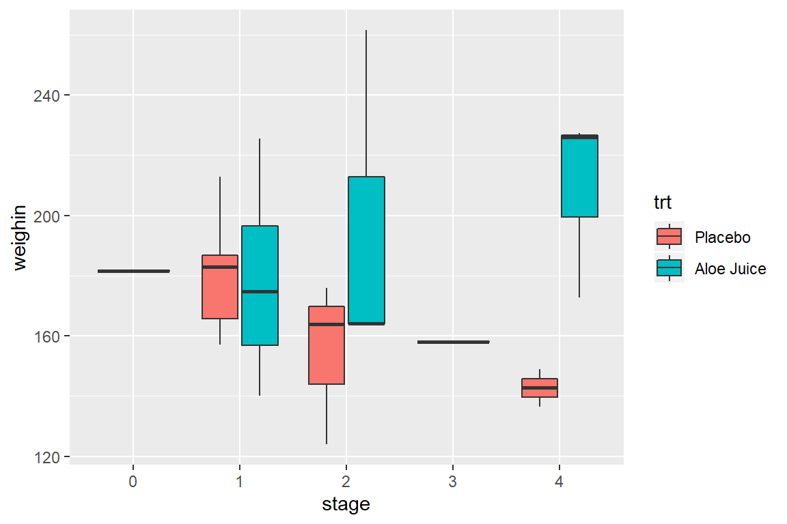
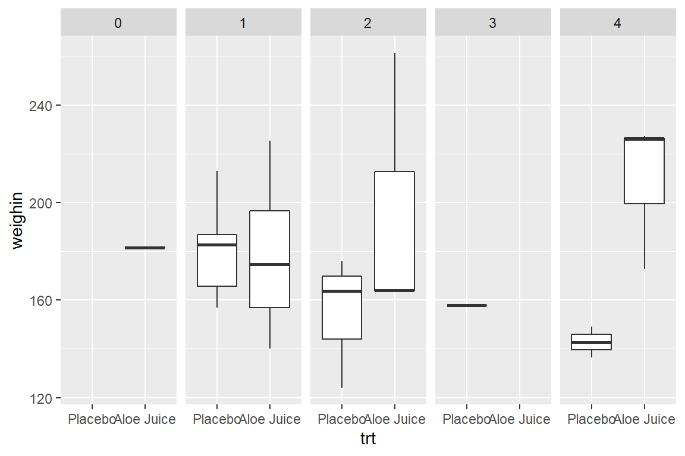

8 Boxplots
Using the ggplot2::geom_boxplot() function
For boxplots, you must specify the variable of interest within the aesthetics as the y variable: ggplot(aes(y = continuous_var)) before adding the geom_boxplot() layer (Wickham et al. 2019).
Reminder: Steps BEFORE the
ggplot()are combined with pipes%>%, whereas layers of the plot are combined with the addition symbol+.
8.1 Single continuous variable
If you only want to produce a single boxplot, then the aesthetics must include some quoted text as the x variable.
8.2 Single Box -for- a Subset
8.2.1 One Requirement
Where as the dplyr::select() function specifies which VARIABLES to reduce down to, the dplyr::filter() function specifies which ROWS or PARTICIPANTS to reduce down to.
When using a
dplyr::filter()step, make sure to change thex = "text", too.
8.2.2 Two Requirements
When testing for a match to a value (for equality) use == instead of = in the dplyr::filter() step.
Use the & symbol to require multiple conditions for the subset, but only include one quoted text phrase for x.
8.2.3 A Requirement Specified with a List
A helpful symbol-set is %in%, which tests if the thing before it is included in the list of elements that comes after it.
8.3 Multiple Boxes -by- a Factor
There are three ways to included a categorical variable to break the sample into groups. You may specify the factor with:
fillthe variable is denoted with different colors filling the boxesxthe horizontal axis is marked for all levelsfacet_grid()a panel is create for each level
8.3.1 Use fill = var_name
8.3.2 Use x = var_name
8.3.3 Use facet_grid(. ~ var_name)
8.4 Multiple Boxes -by- 2 Factors
You may combine any of the three previous specification, one per categorical (factor) variable.
8.4.1 Use fill = var_name_1 and x = var_name_2

8.4.2 Use x = var_name_1 and facet_grid(. ~ var_name_2)

8.4.3 Use fill = var_name_1 and facet_grid(. ~ var_name_2)
8.5 Multiple Boxes -for- a Subset AND -by- 2 Factors
The layers maybe combined to create more complicated plots.
Here is a plot for only participants who were in stage 1, 2, or 4 (n > 1 per stage), and compares the final oral condition for each stage between participants receiving the Aloe treatment vs. the placebo.
8.6 Multiple Boxes -for- Repeated Measurements
The ordinal data is in what is called “WIDE” format, with the repeated measurements as separate variables, sitting side-by-side. Each participant’s data is contained in a single line (25 lines here).
To sort a dataset, use the
dplyr::arrange()function and include the variable or variables you wish to sort by in the parentheses.
# A tibble: 25 x 5
id totalcin totalcw2 totalcw4 totalcw6
<fct> <dbl> <dbl> <dbl> <dbl>
1 1 6 6 6 7
2 2 7 16 9 10
3 5 9 6 10 9
4 6 7 9 17 19
5 9 6 7 9 3
6 11 6 7 16 13
7 12 6 10 11 9
8 14 4 6 8 7
9 15 6 6 6 11
10 16 6 11 11 14
# ... with 15 more rowsSome data manipulations is needed to “stack” the repeated measurement variables (baseline, week 2, week 4, week 6) into a single variable we will call value. We also need another new variable that denotes the measurement time, which we will call time. The resulting dataset is said to be in “LONG” format. Now there will be one line for each observation time on each participant (4 x 25 = 100 lines here).
This is done with with the tidyr::gather(key = "new_time_var", value = "new_value_var", old_var_1, old_var_2, ...) function.
Ignore the message that says “attributes are not identical across measure variables; they will be dropped”.
cancer_clean %>%
tidyr::gather(key = "time",
value = "value",
totalcin, totalcw2, totalcw4, totalcw6) %>%
dplyr::arrange(id, time) %>%
dplyr::select(id, time, value)# A tibble: 100 x 3
id time value
<fct> <chr> <dbl>
1 1 totalcin 6
2 1 totalcw2 6
3 1 totalcw4 6
4 1 totalcw6 7
5 2 totalcin 7
6 2 totalcw2 16
7 2 totalcw4 9
8 2 totalcw6 10
9 5 totalcin 9
10 5 totalcw2 6
# ... with 90 more rowsOnce the data is in this format, you can create box plots for each time point.
Ignore the additional message that says “Removed 2 rows containing non-finite values (stat_boxplot)”. This is just alerting you to the fact that two people are missing their week 6 oral condiditon values.
cancer_clean %>%
tidyr::gather(key = "time",
value = "value",
totalcin, totalcw2, totalcw4, totalcw6) %>%
ggplot(aes(x = time,
y = value)) +
geom_boxplot()